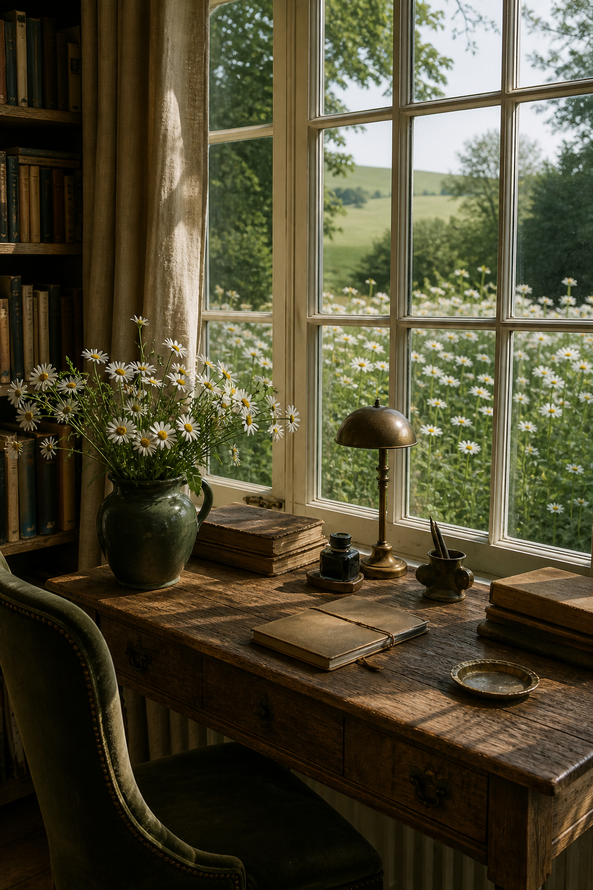
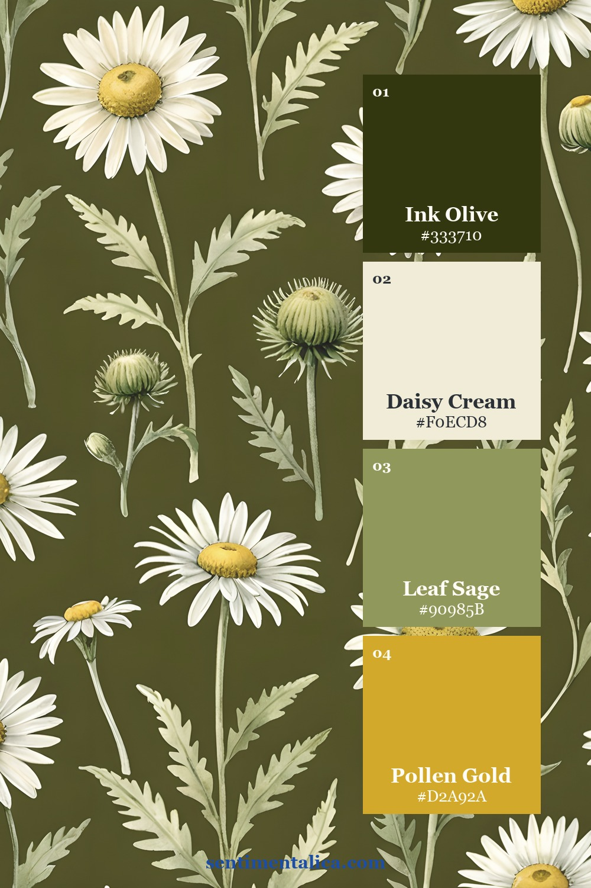
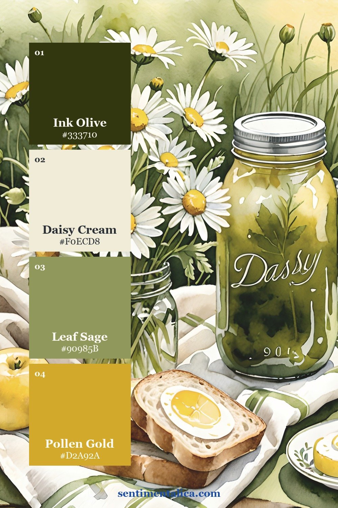
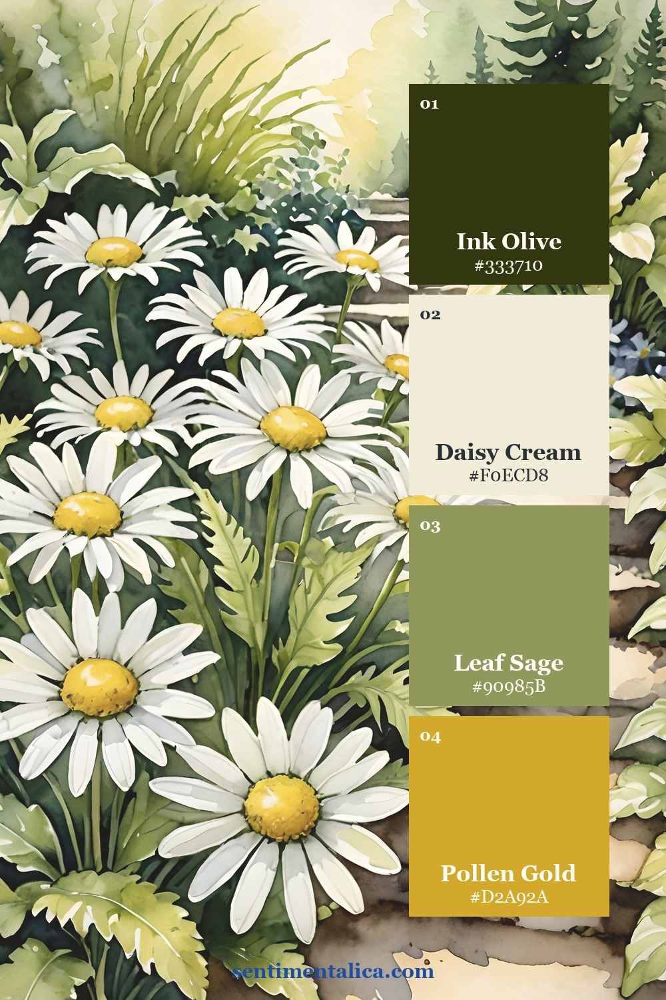
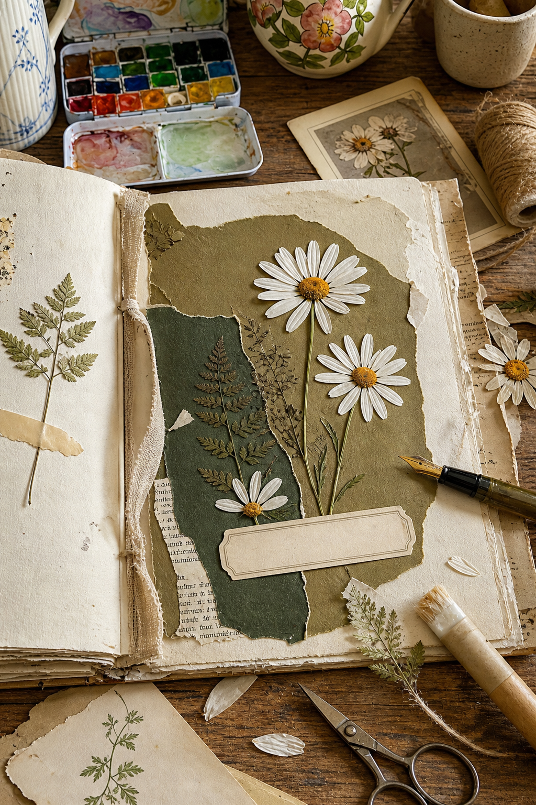
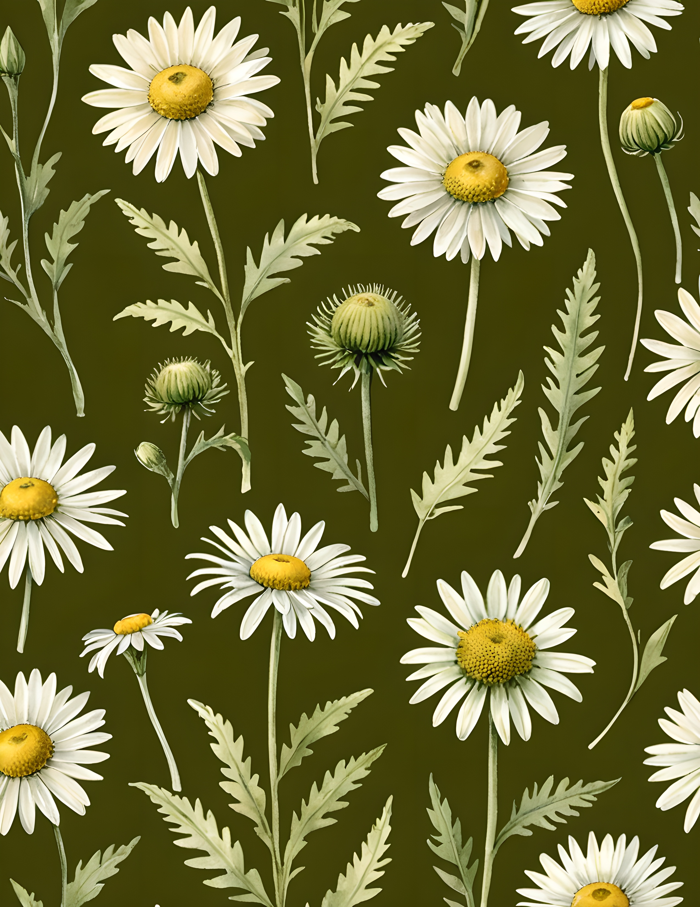
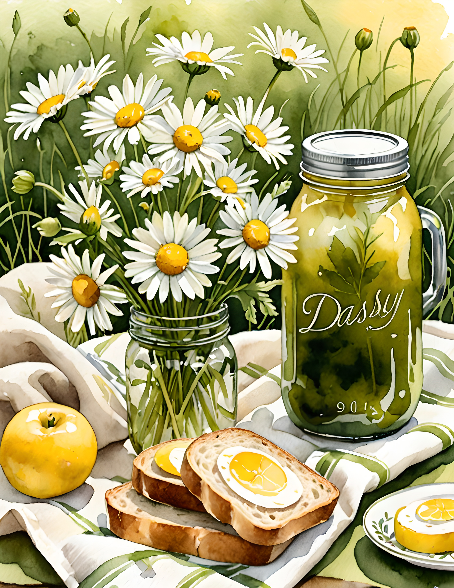
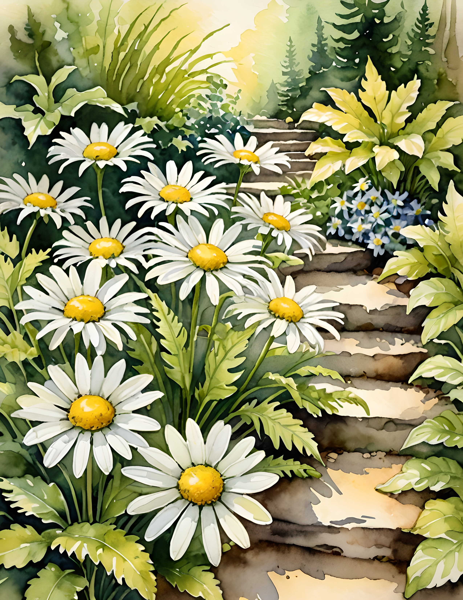

Daisies can make a journal page feel open and hopeful, but too much bright yellow, perfect white, and repeated flower shapes can quickly become sugary. The answer is not to hide the flowers. Give them a darker landscape, use yellow in very small amounts, and let the page keep some of the wildness of a real field.

Start with the landscape, not the flower
Build the page in ink green, olive, and parchment before adding a daisy. One large irregular olive layer can suggest grass or a shaded field. A narrower dark-green edge gives the composition depth. Cream paper preserves a place to write and echoes the petals without making the whole background white.
This order changes the role of yellow. Instead of becoming the theme color, it arrives as a small point of light inside an already complete landscape.
Keep yellow to small points
Use pollen gold only where a flower naturally needs it. Three small centers can be enough for an entire spread. If you want to repeat the color, choose one tiny thread, pencil mark, or torn paper corner rather than another large yellow object.
A useful starting ratio is 45 percent parchment, 30 percent olive, 20 percent ink green, and 5 percent yellow. You do not need to measure. Simply check that the yellow remains the smallest visible family.



Break the perfect flower pattern
A row of identical daisies reads as decoration. Mix one large bloom, one partial flower, and one small bud or stem. Let a petal disappear beneath a paper edge. Turn one flower away from the others. Natural variation makes the page feel observed rather than assembled from matching motifs.
Daisy Field uses white flowers alongside deep botanical greens, garden paths, picnic details, and country scenes. Those darker and more narrative pages make useful anchors when you want the daisies to feel field-grown rather than cute.

Choose one quiet structure
Try an asymmetrical corner cluster, a loose vertical stem, or a flower crossing one torn edge. Avoid placing daisies evenly around all four sides unless you deliberately want a wreath. One concentrated area of flowers leaves the opposite side calm enough for handwriting, a photograph, or an old letter.
Texture also helps. Pair clean white petals with worn book paper, linen thread, pressed fern, or rough handmade paper. The contrast takes the innocence out of the floral motif and gives the page history.
Check the page from a distance
Stand the unfinished page against a wall and step back. You should notice the dark shape first, the white flowers second, and the yellow centers last. If yellow is the first thing you see, remove one repetition. If the white petals scatter your attention everywhere, gather two flowers closer together and leave a larger gap before the third.
A quick black-and-white phone photo can confirm the structure. The cream writing space should stay light, while the olive and ink-green layers remain visibly different from each other. When those values collapse into one middle tone, deepen the smaller green layer rather than adding another color.
See the balance in real pages



If the page needs one softer companion flower, choose a small cream botanical from the 100 free floral pictures. Keep it within the white-and-green family so it adds texture without introducing another sweet accent color.
Yellow flowers feel grown-up when they remain attached to their natural world. Give the daisies dark leaves, worn paper, uneven shapes, and room to move. The yellow can stay cheerful without taking over the page. Find more practical color ideas in the Sentimentalica journal.